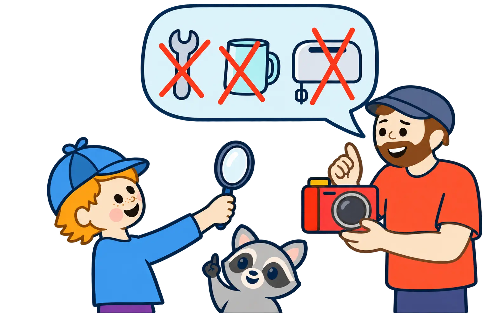

Allgemeine Informationen
Für Eltern
Diese Website bietet Formate, die auf Schulkinder abgestimmt sind. Sie sollen Neugier und Selbstvertrauen stärken und vielfältige, realistische Zukunftsbilder vermitteln.
Kinder erleben, dass Lebenswege nicht immer geradlinig verlaufen und Arbeit ganz unterschiedlich sein kann: herausfordernd, erfüllend, sinnvoll – und manchmal auch richtig schön.
Wenn ich groß bin …
Die Interviews
Erwachsene erzählen von ihrem Weg und zeigen: Ein Beruf ist mehr als Noten. Auch Interessen, Begegnungen, Umwege, Lernen und der Alltag gehören dazu.

Was bedeutet das für Ihr Kind?
Ihr Kind lernt echte Berufs- und Lebenswege kennen. Es darf neugierig fragen und entdecken, dass es nicht den einen richtigen Weg gibt. Dabei geht es nicht um Leistung oder eine frühe Entscheidung für einen Beruf, sondern um Zutrauen und neue Möglichkeiten.
Sie möchten interviewt werden?
Gesucht werden Erwachsene, die kindgerecht und ehrlich von ihrem Berufsweg erzählen möchten – auch von Veränderungen, Umwegen oder Dingen, die sie erst später gelernt haben.
Wie läuft ein Interview ab?
Vor dem Gespräch werden Inhalt, Rahmen und Freigaben gemeinsam geklärt. Das Interview orientiert sich an Fragen, die für Kinder verständlich und interessant sind. Für die Website entstehen unterschiedlich lange Lesefassungen desselben Gesprächs.
Raten, fragen, entdecken
Das komische Dingsda
Ein Gegenstand aus der Arbeitswelt wird zum Rätsel. Die Kinder schauen genau hin, sammeln Vermutungen und finden gemeinsam heraus, wozu er gehört und wer damit arbeitet.

Was bedeutet das für Ihr Kind?
Ihr Kind darf beobachten, Vermutungen äußern und seine Meinung verändern. Es gibt keinen Leistungsdruck: Nicht die schnellste richtige Antwort zählt, sondern das gemeinsame Nachdenken und die Freude am Entdecken.
Sie möchten mitmachen?
Erwachsene können einen ungewöhnlichen, ungefährlichen Gegenstand aus ihrem Arbeitsalltag mitbringen und gemeinsam mit den Kindern auflösen, wofür er gebraucht wird.
Wie läuft ein Termin ab?
Die Kinder betrachten zunächst den Gegenstand und entwickeln eigene Ideen. Anschließend dürfen sie Fragen stellen, Hinweise sammeln und erfahren, aus welchem Beruf der Gegenstand kommt. Zum Schluss wird gemeinsam besprochen, was überraschend war.
Für beide Formate
Über das Projekt
„Wenn ich groß bin …“ möchte Gespräche über Arbeit und Lebenswege öffnen. Kinder sollen Menschen mit unterschiedlichen Erfahrungen kennenlernen und erleben, dass Fragen, Veränderungen und Umwege dazugehören.
Sicherheit & Grenzen
- Kein Test, keine Bewertung: Es geht um Entdecken, nicht um Leistung.
- Kindgerechte Gestaltung: Inhalte werden vorab abgestimmt und so ausgewählt, dass Kinder neugierig und sicher mitmachen können.
- Fotos: Für den Start veröffentlichen wir grundsätzlich keine Kinderfotos.
- Respekt: Wir lachen miteinander, nicht übereinander.
Fragen und Anregungen
Was möchten Sie wissen?
Sie können nachfragen, Hinweise geben oder erzählen, was Ihrem Kind bei der Begegnung mit Berufen helfen würde.
Mitmachen
Möchten Sie etwas mit uns teilen?
Erzählen Sie von Ihrem Berufsweg oder bringen Sie ein „komisches Dingsda“ aus Ihrem Arbeitsalltag mit. Schreiben Sie gern dazu, welches der beiden Formate Sie interessiert.